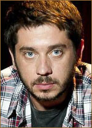

Фильм "Батя"
Сюжет фильма:
История о путешествии взрослого героя к своему Бате, суровому русскому мужику, который стал отцом на заре девяностых и воспитывал своего сына так, как это делали все советские люди. В детстве Макс быстро выучил, где право, а где лево – потому что Батя сделал ему незабываемую «крапивку» на руке. Считать научился по датам на кладбищенских памятниках. Не сквернословил – ведь однажды Батя на самом деле вымыл ему рот с мылом. И чуть что – сразу вставал в угол. Сегодня такие методы воспитания кажутся родителям дикими, а дети девяностых выстраиваются в очередь к психологам на проработку травм. Рефлексирует о своем детстве и Макс, который стал отцом двух детей и хочет понять, почему его Батя был именно таким – закрытым и в чем-то жестоким. Батя обещал навестить Макса и его семью на свое 70-летие, но, как всегда, не приехал. И тогда Макс сам отправляется в дом, в котором он вырос, по дороге вспоминая свое детство с Батей. От этих воспоминаний сожмется сердце у каждого, кто хотя бы чуть-чуть застал девяностые.
Актеры:
Владимир Вдовиченков. Батя — главная роль. Отец Макса. Андрей Андреев. Максим в детстве — главная роль.
Андрей Андреев. Максим в детстве — главная роль.
 Стас Старовойтов. Макс — главная роль.
 Надежда Михалкова. Ирина — главная роль. Супруга Макса.
Надежда Михалкова. Ирина — главная роль. Супруга Макса.
 Диана Енакаева. Настя — главная роль. Дочь Ирины и Макса.
Диана Енакаева. Настя — главная роль. Дочь Ирины и Макса.
 Севастьян Бугаев. Дима — главная роль. Сын Ирины и Макса.
Севастьян Бугаев. Дима — главная роль. Сын Ирины и Макса.
 Сергей Стёпин. дядя Саша — сосед.
Сергей Стёпин. дядя Саша — сосед.